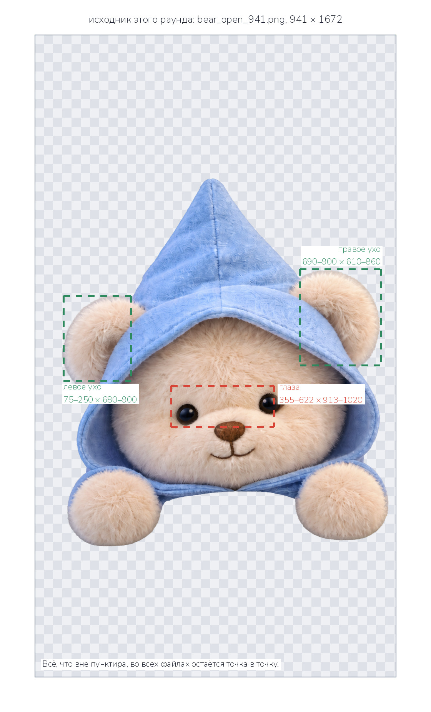
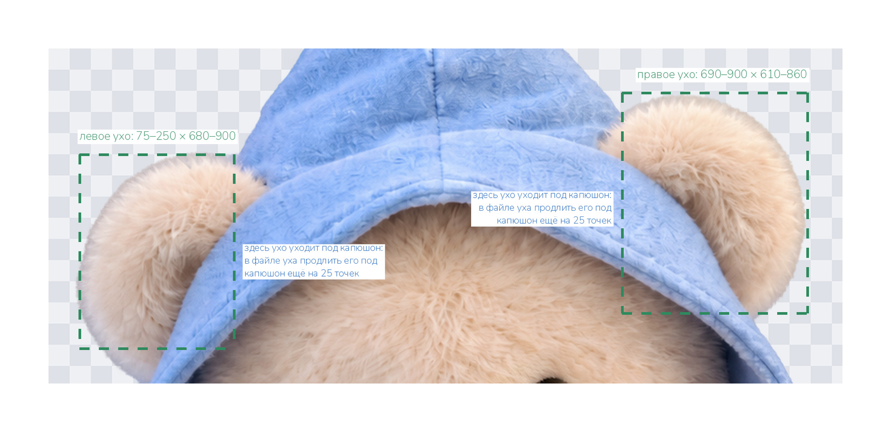
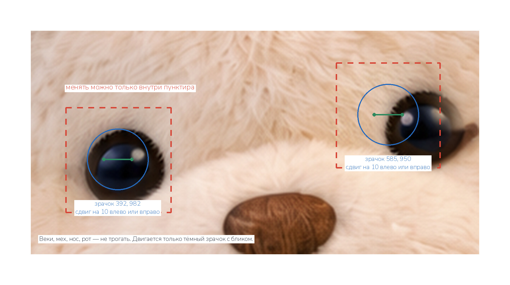

Мишка в спальне уже дышит, моргает и засыпает. Чтобы он стал ещё живее,
нужны две вещи: уши отдельными слоями — тогда они смогут вздрагивать —
и варианты взгляда в сторону, чтобы перед тем, как задремать, он сонно
повёл глазами. Всё это — правки одного файла, который прилагается.
Исходник этого раунда
На этот раз исходник — не картинка комнаты, а готовый файл мишки с
открытыми глазами: bear_open_941.png, 941 × 1672 точки,
прозрачный фон. Он собран у нас из присланных раньше слоёв, и все
остальные лица мишки сделаны на той же морде. Поэтому правило одно на
все задания: файл открывается и правится, а не рисуется заново.
Всё, что вне указанных зон, остаётся точка в точку.

Зелёным — уши, красным — глаза. Координаты — точки этого файла, отсчёт
от левого верхнего угла.
Задание 1 — уши отдельно

Уши торчат из-под капюшона: капюшон лежит поверх них. Поэтому в слое
уха каждое ухо надо продлить под капюшон ещё на 25 точек — когда ухо
чуть шевельнётся, из-под края капюшона не должно показаться пустоты.
1 Три файла из bear_open_941.png
ear_left.png
только левое ухо на прозрачном фоне; зона 75–250 по ширине, 680–900 по высоте; ухо продлено под капюшон на 25 точек
ear_right.png
только правое ухо; зона 690–900 по ширине, 610–860 по высоте; продлено под капюшон на 25 точек
head_no_ears.png
тот же мишка, у которого уши стёрты в прозрачность; край капюшона, из-под которого они торчали, не тронут
Холст и место
У всех трёх файлов холст ровно 941 × 1672, содержимое ровно там, где
оно в исходнике. Не обрезать по контуру, не центрировать, не
масштабировать.
Край меха
Уши вырезать мягко, по волоску, с полупрозрачными кончиками ворса —
как они и нарисованы. Никакой каймы.
Формат
PNG-24 с альфа-каналом.
Нельзя рисовать уши заново. Это должны быть те же самые уши, что в
исходнике, вырезанные из него: та же шерсть, тот же свет. Если ухо
будет нарисовано с нуля, оно не совпадёт с местом, откуда его стёрли.
Как это будет работать. Слои складываются так: уши сзади → голова
без ушей → лапы → одеяло. Ухо чуть вздрагивает раз в десяток секунд —
капюшон при этом лежит сверху и всё прячет.
Задание 2 — взгляд в сторону

Синий круг — глаз, зелёная точка — куда уходит зрачок. Веки, мех вокруг,
нос и рот не меняются вовсе.
2 Три файла из bear_open_941.png
eyes_left.png
оба зрачка сдвинуты на 10 точек влево (для зрителя), блик уходит вместе со зрачком
eyes_right.png
оба зрачка сдвинуты на 10 точек вправо
eyes_down.png
оба зрачка сдвинуты на 8 точек вниз — сонный взгляд в одеяло
Что можно менять
Только пиксели внутри двух красных прямоугольников: левый глаз
355–430 по ширине, 945–1020 по высоте; правый 548–622 по ширине,
913–988 по высоте. Всё вне их — точка в точку как в исходнике.
Ориентиры
Левый зрачок сейчас в точке 392, 982, правый — 585, 950, оба около
22 точек радиусом. Голова слегка наклонена, поэтому правый глаз выше
левого на 32 точки — этот наклон сохраняется сам собой, если не
трогать веки.
Как двигать
Тёмный зрачок с бликом уходит в сторону, открывая с противоположной
стороны чуть больше глазного яблока — оно у мишки такое же тёмное, с
мягким отблеском. Разрез глаза и веки не меняются.
Формат
PNG-24 с альфа-каналом, холст 941 × 1672, фигура на том же месте.
Нельзя генерировать новое лицо. Если морда будет перерисована,
сдвинутся нос, рот и мех — и при переключении взгляда мишка дёрнется
всей головой. Открыть файл и сдвинуть два зрачка — вот всё задание.